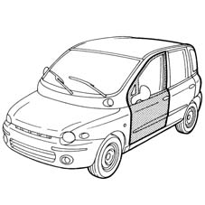
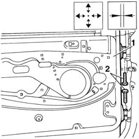
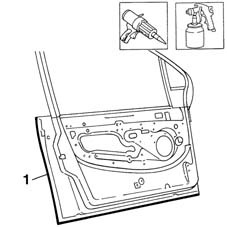

7210E36 R.R. FRONT SIDE DOOR
- Path
- Procedures > 72 PANELS AND FRAME > 7210 REMOVING REFITTING > 7210E EXTERNAL PARTS > 7210E36 R.R. FRONT SIDE DOOR
- Kind
- repair procedure (removal / refitting; the operation number is the code)
- Applies to
- all engines; all production periods
- Interactive page
- https://sloeber94.github.io/elrnDB-fMltpl/en/#/2892323
Applies to: all engines; all production periods
 Removing
Removing
 Refitting
RefittingCheck that the components connected are not distorted by checking the bodyshell alignment measurements using suitable equipment (e.g. gauges).
Straighten the body as necessary.
Remove the vehicle side door.
Op. 7005A20 FRONT SIDE DOOR LOWER SEAL SUPPORT - R R

Applies to: all engines; all production periods
Refitting
RemovingPosition the part on the stand, fit the door limiter, catch and handle.
1. Position the door on the vehicle and secure without tightening the bolts.
Adjust the position of the door.
2. Remove the door from the vehicle by unscrewing the retaining bolts.
Remove the catch, door limiter and handle from the door.

Applies to: all engines; all production periods
1. Seal the front door in the area shown in the figure.
Paint the front door (follow the recommended procedure).

Applies to: all engines; all production periods
Refit the vehicle side door.